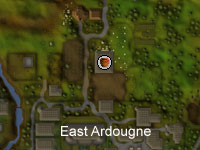
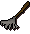
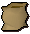
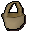

")
Farming - Tools
Introduction
The tools that are needed to begin farming can be bought from both Farming shops and farmers, which can be found all over the world. You also have the option to trade with other players for Farming equipment, as every item apart from the watering can is tradable.
Farming Shops can be identified using the Farming shop icon on both the world map and the in-game minimaps.
There are four Farming shops found throughout RuneScape:
| Farming Shop | Location |
![[image: location of port phasmatys farming shop]](../../img/main/kbase/skills/farming/screenshots/morytania_fshop.jpg "location of port phasmatys farming shop") |
North-west of Port Phasmatys |
![[image: location of falador farming shop]](../../img/main/kbase/skills/farming/screenshots/falador_fshop.jpg "location of falador farming shop") |
South-east of Falador |
|  | North of East Ardougne |
![[image: location of catherby farming shop]](../../img/main/kbase/skills/farming/screenshots/catherby_fshop.jpg "location of catherby farming shop") |
North of Catherby |
| Tool | Description |
|  Rake |
Used for weeding your Farming patches. |
![[image]](../../img/main/kbase/items/tools/seed_dibber.gif) Seed dibber |
Used for planting seeds. |
![[image]](../../img/main/kbase/items/tools/secateurs2.gif) Secateurs |
Used to remove diseased foliage from trees and bushes. |
![[image]](../../img/main/kbase/items/tools/watering_can.gif) Watering can |
Used to water your plants. Can be refilled from any water source. |
![[image]](../../img/main/kbase/items/tools/spade.gif) Spade |
Used to harvest your plants or remove dead plants to clear your patch. |
![[image]](../../img/main/kbase/items/tools/gardening_boots.gif) Gardening boots |
These do not affect your Farming ability or the growth of your crops in any way. They are currently only worn for decorative purposes. |
![[image]](../../img/main/kbase/items/tools/gardening_trowel.gif) Gardening trowel |
Used to fill a plant pot with soil and to plant a sapling into a Farming patch. |
|  Empty sack |
Used to carry vegetables (but not necessary, they can go in normal inventory slots). Can be bought or made. |
|  Basket |
Used to carry fruit (but not necessary: they can go in normal inventory slots). Can be bought or made. |
![[image]](../../img/main/kbase/items/tools/plant_pot.gif) Plant pot |
Used to grow sapling before planting it into a Farming patch. Can be bought or made. |
![[image]](../../img/main/kbase/items/misc/compost.gif) Compost/Super compost |
Used to fertilise Farming patches. |
![[image]](../../img/main/kbase/items/potions/other_potions/plant_cure.gif) Plant cure |
Used to cure plants that have become diseased. Cannot be used on bushes or trees. |
![[image]](../../img/main/kbase/items/amulets/amulet_farming.gif) Amulet of Farming(8) |
An amulet that can be attuned to allotments and flower patches, which informs you when that patch is ready for harvesting, becomes diseased or dies. |
Baskets and Sacks
Baskets and sacks are useful because they allow you to carry many items in one inventory slot. The baskets and sacks are mainly used to hold the produce used as payment to the gardeners.
Baskets and sacks cannot hold all items grown from Farming. Baskets can store up to five items and can hold apples, oranges, tomatoes, strawberries or bananas. While sacks can store up to ten items and can hold potatoes, onions or cabbages.
As mentioned in the table above, these two items can be player-made. This can be done using the Crafting skill.
The Gardening Leprechaun

If you store items with one leprechaun you are able to retrieve them from any other leprechaun within the game.
Leprechauns are also able to convert any of your Farming produce into notes, enabling you to carry much more to the bank without having to make multiple trips. To convert your produce, simply use it on the leprechaun.
| Tool | Max. Items Limit |
![[image]](../../img/main/kbase/items/misc/emptybucket.gif) Empty bucket |
31 |
Compost |
255 |
Super compost |
255 |
![[image]](../../img/main/kbase/items/tools/scarecrow.gif) Scarecrow |
4 |
Rake |
1 |
Secateurs |
1 |
Watering can |
1 |
Seed dibber |
1 |
Spade |
1 |
Gardening trowel |
1 |
Click here to view the Farming FAQs

More articles in
Farming (Members Only)
|
|
|
Further Help
If this article does not help you, you may find the following sections of the RuneScape site helpful:
|
|